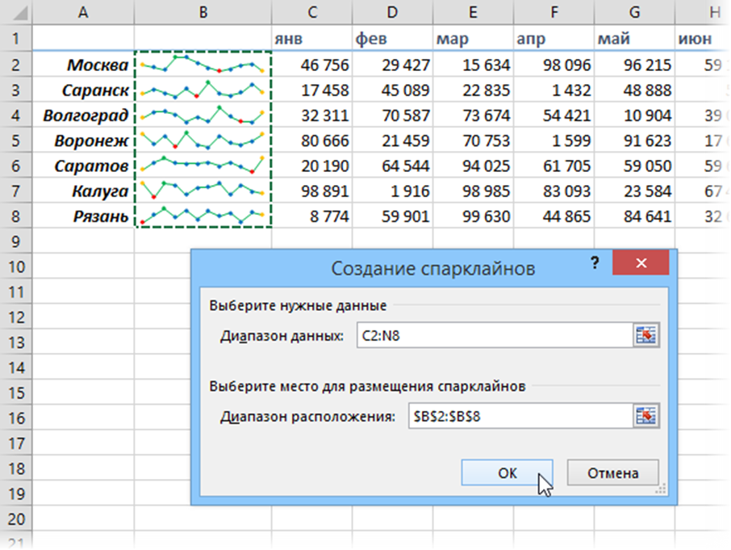

Спарклайны
Спарклайны — это нарисованные прямо в ячейках миниатюрные диаграммы, наглядно отображающие динамику наших данных. Чтобы их создать, нажмите кнопку «График» (Line) или «Гистограмма» (Columns) в группе «Спарклайны» (Sparklines) на вкладке «Вставка» (Insert). В открывшемся окне укажите диапазон с исходными числовыми данными и ячейки, куда вы хотите вывести спарклайны.

После нажатия на кнопку «ОК» Microsoft Excel создаст их в указанных ячейках. На появившейся вкладке «Конструктор» (Design) можно дополнительно настроить их цвет, тип, включить отображение минимальных и максимальных значений и т. д.